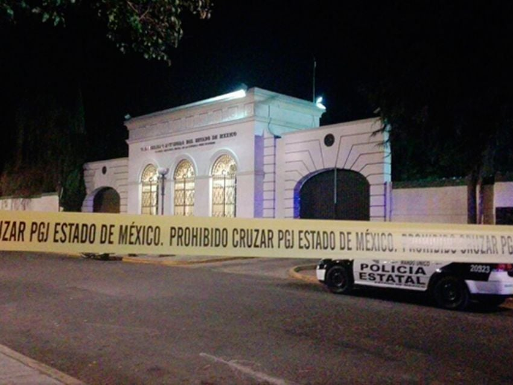

Licenciatura en Ingneiería en Computación (UAEMex)
2019 - Actualidad
En 2019 ingresé a la carrera de Ingneiería en Computación en la facultad de Ingneiería de la Universidad Autónoma del Estado de México
Dato curiso

Antes de ser la biblioteca de la facultad de Ingeniería, fue el edificio de laboratorios de química
Bachillerato, Plantel Nezahualcóyotl
2016 - 2019
En 2016 tuve mi primer acercamiento a UAEMex, aprobé el examen de admisión de bachillerato
Dato curiso
En 2017 un alumno de la preparatoría realizó un atentado, explotando una bomba molotov e hiriendo a 5 alumnos con un hacha